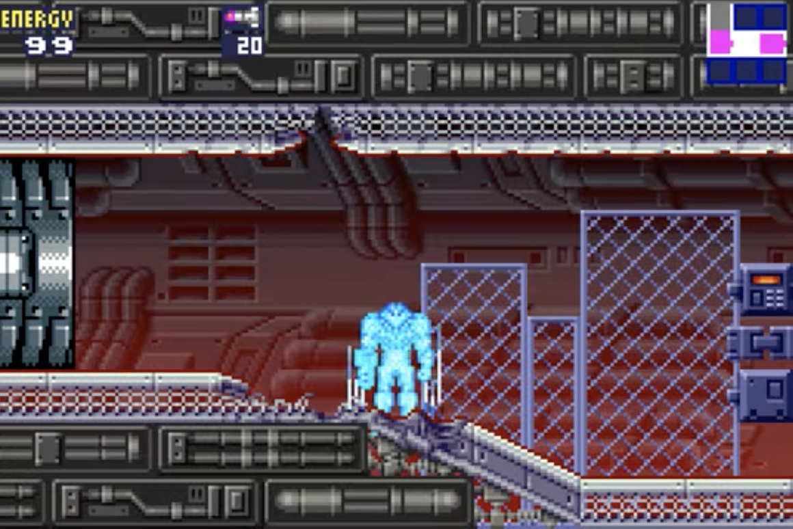

From Passion to Precision
Speedrunning often begins when a player realizes a "hard" game has become second nature to them. What starts as a casual hobby transforms into a deep-seated passion for efficiency. When a runner realizes they can navigate a digital world faster than the developers intended, they stop "playing" and start deconstructing. This mastery is the foundation of the community, where players turn every pixel and frame into a tool for ultimate speed, often sparking friendly rivalries or intense controversies that push the game's popularity to new heights.The Engineered Limit: Tool-Assisted Speedruns
While humans push physical limits, Tool-Assisted Speedruns (TAS) represent the absolute limit of the game’s code. TASing is a labor of precision: it can take 8 hours of painstakingly setting up save states and adding inputs frame-by-frame to create a single run. I once saw a TAS speedrun the game "Dragon Quest 8" 7 hours faster than the fastest human runner, the times were: TAS - 4:49:0x vs Highspirits 11:46:41. In games like Trackmania, this allows for "nosebug" showcases that go far beyond human capability. While a skilled human might pull off a single nosebug with immense practice, a TAS can stack these bugs repeatedly, accelerating from 50 to 500 mph in 0.05 seconds. It is not about ease of play, but the dedication to engineering a "perfect" world that humans can observe but never truly inhabit.